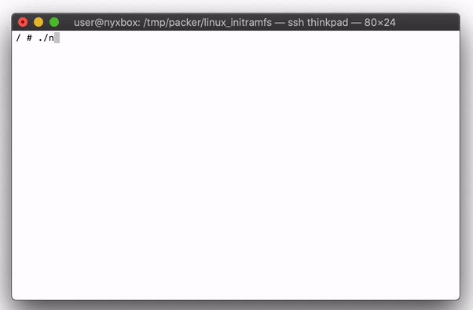
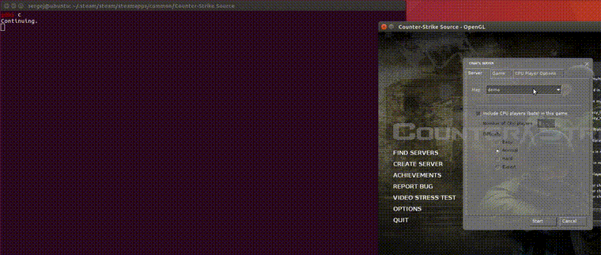
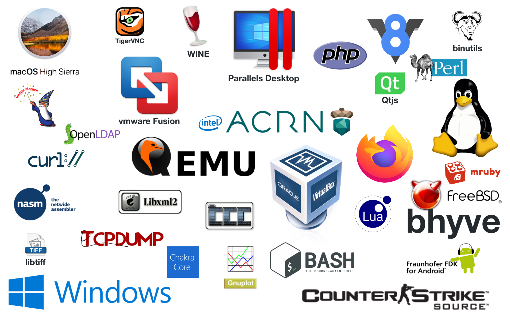

What kind of Fuzzer is Nyx?
Nyx is a new fuzzing engine that allows you to harness and fuzz complex, stateful targets. By snapshotting a whole VM and being able to reset it to a clean state many thousand times per second, Nyx allows you to fuzz complex stateful targets such as browsers, operating systems or even hypervisors with zero hassle: You don’t have to reset the file system or even the kernel state - everything gets reset automatically after each test. You don’t even need to restart the target after crashes, it will be restored just like any other side effect of the execution.
While Nyx has its own fuzzing logic, it’s very easy to build your own fuzzer on top of Nyx’s snapshot capabilities - you can already easily combine the backend with many available fuzzer frontends such as AFL++ or Nauitlus depending on your needs.
Robustness
 Even "simple" targets like a shell are hard to fuzz with existing fuzzers. When running random commands a shell will find a million ways to break the environment: wiping the filesystem, OOM, fork-bombs, killing the parent process and many more.Nyx can fuzz almost anything you can run in KVM: We have successfully fuzzed browsers, operating systems, graphical games and hypervisors using Nyx. Targets as simple as a shell can be fuzzed just by dropping the binary in the fuzzer (if your hardware supports Intel-PT for coverage).
Performance

Not only is Nyx build on top of highly optimized components such as libxdc and fast on it’s own, by taking the snapshot right before your target consumes the input, you can shave of
significant amounts of time over restarting the target - when fuzzing a browser, you don’t have to wait 10 seconds for the restart - the next snapshot is ready in a fraction of a microsecond.
Even better: When you fuzz slow targets that consume multiple packets in a row (e.g. network services, operating systems,
hypervisors, GUI applications, web servers or games) you can use incremental snapshots: creating a snapshot is just as
fast as restoring a snapshot, and you can create temporary snapshots after the first n packets to fuzz the remaining
packets. On particularly slow targets this can get you a 10x or more speedup!
Integration
Building your own fuzzing logic on top of Nyx is easy: Using libnyx you can build a simple fuzzer that can target
almost anything in just some 20 lines of C, Rust or Python. We have used this to integrate Nyx not only with our own
fuzzing engine but also wit Nautilus and AFL++.
Success Stories
Nyx is now used by large companies: Intel's kAFL is an actively maintained distribution of our codebase that has been used to validate x86 firmware, drivers and kernels. Similarly, Mozilla is currently integrating Nyx into Firefox CI, as Nyx is the first fuzzer that’s able to target the complex and stateful IPC interfaces in a robust way.
We have also found a significant number of bugs in targets ranging from shells such as bash, zsh, fish, programming languages such as Ruby, PHP or V8 (Javascript), games such as counterstrike source, kernel modules such as file system drivers in Windows, macOS and linux and even hypervisors such as Virtual Box and KVM/QEMU:
